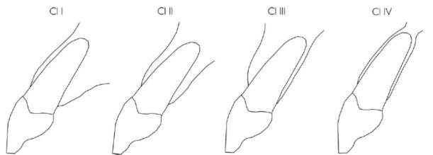
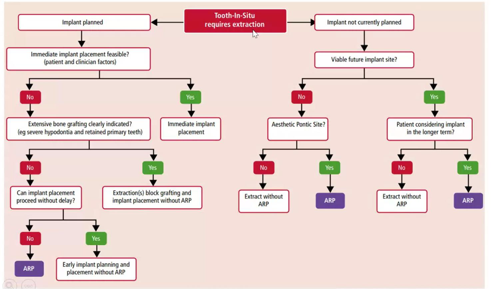

牙周
講古
- 1977: 植牙商品化
- 1981: GTR clinical trail
- 1986: 植牙進入美國市場
新辭


 ## 治療計劃 {#治療計劃 }
## 治療計劃 {#治療計劃 }
-
Bone


-
History (Med, Dent.)
- 骨鬆 (Bisphosphonate)
- 長骨 → 脊椎 → Mx.
- 原先抑制癌症骨轉移
- Bisphosphonate 會在骨內很久 (十年)
-
民事訴訟太難啦
- 抗凝血
- DM
- Well control: 7
- 被告不會輸
- not well ctrl. survival rate ↓ about. 10%
- Well control: 7
- BP?
- <160(mmHg)：無責
- 160~180(mmHg)：可做簡單術式
- 180 (mmHg): 全責
- RT
- Dose > 50 成功率下降
- 6y 後成功率恢復 90% ↑
- 骨鬆 (Bisphosphonate)
-
Soft t.
- Volume
- KT
-
Space
-
會診白痴
- 叫患者去掛原本醫師號詢問
- 留下證據鏈（對話紀錄、掛號單。。。
- Nerve
- Inf. alv n.
- Mental n.
- Lingual n. (??? 看不到，但真的切得到)
- Mesial palatine n.
- 可以截斷，注意 Bleeding
- G. Palatine
- 一般手術碰不到
- Infra orbital n.
- Canine apical 距離約 7mm
- Sinus
- Artery
- Mesial palatine n.
- PSA a.
- Bone 外面 60%
- Bone concavity
- 照 CT
Nerve damage
- 半年沒恢復 → 永久？
- 實務上錯
Inter foramen
- 鑽到病人會很酸
- 質體縮短、換位置
- 發炎可能會影響 Mental n.
PANO 看不到 Concavity
- Radiographic guide
- 在那個 CT 又貴又慢的年代
- Bone
- 放在骨頭上的塑膠片，RO
- Tomagraphy
- 很多張橫截面影像 (只有單一方向)
-
Crown and bridge ?
- 不考慮患者意願 Crown and bridge 是個好選擇
- 不會 Fail、並發症
- 價格？
- 單顆缺牙會變成 3 個 Crown
- 清潔 --
- 前後本來就要假牙 ++
- Bone 不足 ++
-
endo or implant
- endo 成功率 70-80% (專科 80-90%)
- Implant 3年成功率達 97%，10年成功率90-95%，peri-implantitis10-20年發生率10%
- All on 4
- 歷史 30y
- 高 Cp 值恢復全口功能
- 不用補骨，低訓練
- Concern: 長期骨吸收嚴重
骨粉
- DBA (Demineralized Bone Allograft)
- 自體骨
- FDBA (Freeze-Dried Bone Allograft)
- 同種異體骨
- DFDBA (Demineralized Freeze-Dried Bone Allograft)
- 同種異體骨
- Bio-oss (牛骨)
- 吸收慢
- Zinograft (豬骨)
- Bone, cementum, PDL 都要有再生才有 Periodontal Regenerative
- Neven’s membrane 少數證明 GTR 有幫助的 membrane
Crestal 要 over platform 1.5-2mm
Membrane
- non–cross-linked collagen membrane
- 完全吸收約 4–8 週
- 生物相容性最佳
- cross-linked collagen membrane
- 完全吸收約 3-6 月
- 生物相容性次之，軟組織整合稍慢
- Primary closure
- 未達 Primary closure， collagen membrane 暴露於唾液、細菌、口腔酵素 collagen 會被 collagenase 快速分解
- 持續時間剩下 1/3-1/2
Drug
Bisphosphonate (BP), Denosumab
- 高劑量使用
- 植體失敗風險 ↑（尤其用於 癌症骨轉移預防 的 regimen）
- 機轉 (Mechanism)
- BP 被骨釋放後 → Osteoclast 活性 ↓ → 骨重塑停滯 → Dead Bone
- Macrophage ↑，造成慢性發炎與壞死環境
- 口服 BP (Osteoporosis 用藥)
- MRONJ 發生率 <0.04%
- JCO (College Guideline)
- 長期 BP 並不顯著增加骨折風險
- Drug holiday 建議：停藥前 2 個月、後 3 個月再行侵入性治療
- Denosumab (RANKL 抑制劑, IV injection)
- 與 BP 相同會抑制骨重塑
- 植體失敗率：10% → 20% (較高風險)
Corticosteroid
- 影響骨代謝與免疫
- 可能造成 Marginal bone loss 與 Implant clinical failure
Romosozumab
- 造骨型藥物 (Sclerostin inhibitor)
- 機轉：抑制骨抑制蛋白 → 促進 Osteoblast 分化與骨形成
- 用於骨質疏鬆治療，對於牙科影響??


CTX 與 MRONJ
-
CTX (C-terminal telopeptide of type I collagen)
- type I collagen meta → Bone remodeling activity
- 指標：>150 pg/mL → 拔牙與外科手術風險下降
-
MRONJ (Medication-Related Osteonecrosis of the Jaw)
- Df：接受抗骨吸收或抗血管新生藥物後，顎骨出現 necrotic bone 且持續 >8 週未癒合
- Risk：高劑量 BP/Denosumab、癌症治療、侵入性牙科治療、差的口腔衛生
-
CTX 與停藥
- 平均停藥 1 個月 → CTX ↑ 約 25 pg/mL
-
BP lesion 特點
- 病灶可能在拔牙前已經形成（Harvard 新動物研究證實）
- IV BP: 下次注射前拔牙
- 若緊急拔牙 → 風險差異不大
質體
-
Cortical bone Level: 細螺紋，卡緊
-
Bunddle bone Level: 粗螺紋，長細胞
-
implant 植入不能晃，但要有血液上來的空間
- Drill 比 implant 深

- Drill 比 implant 深
-
放 implant: 20-50 N*cm
-
質體定義: An artificial material is inserted into the alveolar bone to restore the oral environment by osseointegration
-
Osseointegration: Direct structural and functional connection between ordered, living bone and the surface of load-bearing implant
-
Fenestration: 牙根底部位置開始的骨缺損
-
Dehiscence: 牙根周圍骨頭由齒頸向牙根尖缺損
Zirconia implant
- 目前唯一能替代 Ti
- 5y survival ~ Ti (97> 都偏 prospective clinical trial)
- MBL, PD, ~ Ti
- Abutment survival??
- 易裂，僅用 single implant, One piece
- Metal Free? exclude two piece design
Design

-
Standard Branemark (C)
- 最早(1977)
-
Flute（排屑槽，C 黑匡）
- 增加切削效率，排出骨屑
- 避免熱累積與 bone necrosis
-
Root form (A)
- 避免尖端鑽出
- Tapper, 無螺紋
-
Taper form v.s. Straight form
| Taper | Straight | |
|---|---|---|
| Drill誤差 | 0.5mm | 0.2mm |
| Dill 應力 | Cervical | Apical |
| Bone prepare ability | + | ++ |
- Double thread
- 螺距相同，但導程加倍
- 同深度旋轉少 → 發熱少
- Primary stabilization 較好

Abutment Connection
| - | Internal connection | External connection | Taper connection (為 Internal) |
|---|---|---|---|
| 特質 |
|
|
|
| 縱切 |  |
 |
 |
| 橫切 |  |
 |
- |
Ones tage


- Straumann
- 圓底疏螺紋
- 該患者雖然 Cortical Bone 厚，但海綿骨疏鬆 → 需要密的螺紋增加穩定
- One stage (Tissue level)
- Margin 在 Body 上
- 成功率 ↑
- 難以配合 GBR
- 無法調整，因為沒有 Abutment 來轉彎
骨整合
- Metal 放入骨頭會釋放 ions ，因此會被 Fibrous tissue 圍繞
- Implant 未完成骨整合，Moving < 50-100 μm 否則 failure
- 質體邊緣至少要 2mm 骨頭才能保證血流供應，因為沒有 PDL 血流
| 項目 | 時間 |
|---|---|
| 拔牙後等待 | 6個月 |
| 骨整合 | 6個月 |
| 質體接出來、等待軟組織癒合 | 3~4星期 |
| 製作假牙、調整咬合 | 3~4星期 |
| 合計 | 14個月 |
拔牙窩的癒合
| 時間階段 | 組織變化與重點 | |
|---|---|---|
| Day 0 | 血塊形成/止血 | 血塊除了止血外，內含許多 growth factor，會釋放訊號誘發骨形成。 |
| Day 4~5 | 血塊轉為 granulation tissue | 持續釋放 growth factor，並伴隨更多鈣化物形成。 |
| Day 5~16 | 轉變為 connective tissue matrix | 拔牙窩的 bundle bone 開始吸收，讓周圍骨髓空間的血管增生，逐漸形成 cancellous bone。 |
| Week 3~6 | 骨生成與軟組織屏障 | woven bone 從拔牙窩周邊開始形成。 |
| Week 5~10 | 骨重塑形成 trabecular bone | 傳統觀念認為骨頭鈣化至此階段後才適合植牙。 |

- Bundle Bone 無法被 Preserve
- Bundle bone是骨前驅細胞的重要來源，拔牙窩越完整，自癒能力越好。
- 上下顎拔牙後，唇頰側的骨板易吸收
- 癒合皆偏腭/舌側
- 上顎後牙區鼻竇氣室化
- 前牙不補骨頭一定變 class III

拔牙齒槽的分類
Elian
- Type1：軟組織與硬組織皆好
- Type2：軟組織完整但硬組織有垂直方向的缺損(不管缺損多少)
- Type2A：唇側缺損(或說dehiscence)高度在上1/3(靠牙冠)
- Type2B：唇側缺損(或說dehiscence)高度在中1/3
- Type2C：唇側缺損(或說dehiscence)高度在下1/3(靠根尖)
- Type3：軟組織與硬組織皆有缺損
Kan’s
- Class I：牙根靠著唇側的cortical plate，最常見
- Class II：牙根位於唇舌徑的中間且根尖1/3沒有碰到任一邊的cortical plate。
- Class III：牙根靠著顎側的cortical plate
- Class IV：至少2/3的牙根有同時接觸兩側的cortical plate
過去即拔即種在顎側骨，所以 Class I 最多 (因為沒有那麼長的質體)
- 唇側dehiscence
- V-shape：
- 只有在牙根最中、前側有小缺損(僅侷限在middle third)
- Growing potential：容易生長，主要依靠兩側的骨頭
- U-shape：
- 比較大，但侷限於牙根最distal與最mesial的範圍內
- Growing potential：主要靠兩側的interdental bone主導
- UU-shape：
- 超過牙根範圍，涉及interdental bone的程度(或碰到鄰牙)
- Growing potential：很差，牙根表面很難長骨頭，做即拔即種的話，此種成品最不美觀
- V-shape：

Osseointegration Detection
共振&阻尼
- 系統描述
- 質量：
- 彈簧：剛度
- 阻尼：粘滯阻尼
- 位移：
受力平衡方程：
假設解為指數型：
代入微分方程：
整理得到特徵方程：
定義無阻尼自然頻率與阻尼比：
則特徵根可表示為：
- 欠阻尼 ()：
解：
- 臨界阻尼 ()：
不振動，系統以最快速度回到平衡。
- 過阻尼 ()：
仍不振動，系統慢慢回到平衡。
植牙的時機與步驟
| 分類 | 植牙時機 | 優勢 | 劣勢 |
|---|---|---|---|
| Type 1 (Immediate) | 即拔即種 (0–1週) | - 減少手術次數 - 減少病患復原時間 - 減少術後疼痛 - 減少整體治療時間 - 骨頭剩最多 - 美觀效果佳 |
- 受到齒槽型態影響大，若拔牙窩位置不佳易失敗 - 軟組織太薄時效果差 - 可能缺乏足夠角化牙齦（需額外組織手術） - 技術敏感度最高 |
| Type 2 (Early early) | 拔牙後 4–8 週 | - 補完骨，軟組織最多，翻瓣操作較容易 - 局部發炎反應較低 - 軟組織提供較佳血液供應，傷口不易裂開 |
- 癒合初期仍受齒槽型態影響 - 拔牙窩吸收變化大 - 治療時間較長 - 技術敏感度仍偏高 - 可能需額外手術 |
| Type 3 (Late early) | 拔牙後 10–16 週 | - 骨癒合，有足夠 woven bone - 軟組織成熟，操作容易 - 骨型態變化趨於穩定 - 可預測性較高 - 是目前最主流方法 |
- 治療時間增加（需等待癒合） - 齒槽骨四周已有不同程度吸收 - 仍可能需要輔助手術 |
| Type 4 (Late) | 拔牙後 > 16週 | - 骨與軟組織型態已穩定 - 軟組織成熟，有足夠角化牙齦 |
- 治療時間最長 - 經過骨重塑後，骨頭型態可能不佳 - 仍可能需要輔助手術 |
- Type 1、2需要額外的技巧，因為傷口仍在癒合初期
- Type 3、4比較保守，但齒槽嵴已經偏離原先的位置了，在判斷植體的apical-coronal深度時比較困難，最好的參考點是鄰牙CEJ或是未來要做假牙的牙冠邊緣往下3mm，短於2mm會有美觀風險，植體的平台或是金屬部分可能會露出來。
Type I
- 即拔即種
- 保留原本的骨頭
- implant
- 原本 cingulum 位置穿出
- Labial 保留至少 2mm
- gingiva margin 下 3mm
- Lingual bone 提供 Primary stability
- GBR
- Labial, interdental bone 放 membrane
- 牙齦往 coronal 縫 → Tension Release

Type II
- 4-8w
- 唇側沒有骨頭
- 先讓軟組織長夠多再來GBR植牙
- 用膠原蛋白
- 軟組織總量夠多就不須做tension release

Alveolar ridge preservation
-
依據放入窩洞的材料：
- bone graft
- collagen plug (降解速度較快，效果較差)
- mixed
-
closed？
- Kg 消失
- 可能要 Release
-
Flap？
- 過去： Open 會讓軟組織進去、傷口暴露感染
- 現在有 non-resorbable
-
Socket shield
- 拔牙留下一部分健康牙根
- 爭議
-
ARP 決策樹

QA
- Tissue Level 為何軟組織不會進去
- Final drill < Implant
- 完全密合
- 質體即拔即種鬆掉能不能鎖回去
- 設計
Immediate implant
-
Immediate implant placement (IIP)
-
Immediate implant placement and proviosionalization (IIPP)
- proviosion 若設計不佳，Implant 容易受力，影響成功率
-
Daniel Buser (1999)
- Bone level 和 One stage tissue level 在 implant 不受力時成功率差不多
- One stage tissue level 不會導致 soft tissue 往下掉
-
Can the socket be cleaned up ?
- Socket 的 granulation tissue 難以清乾淨
-
Implant 會阻擋骨細胞移動
- 後牙 Labial Dehiscence 做 IIP 會導致 Labial bone 長不回來

Furcation involvement
- Furcation involvement should record horizontal probing.
- Furcation involvement 在 Phase I 以 clinical 紀錄為主(即使 PA 已經 III)
- Furcation involvement 放 membrane 會影響 Blood supply → 改 CTG
- 如果 gingiva recession 不多也可以不放
- Furcation involvement 可以掃超音波 diamond 有 Osteoplasty 效果
CTG (Connective Tissue Graft)
-
Miller’s classification
- 看 interdental Soft tissue

- 看 interdental Soft tissue
-
Graft 來源：Subepithelial connective tissue (常取自腭側)
-
目的：
- 覆蓋牙根 (Root coverage)
- 增厚牙齦 (Gingival thickening)
- 改善美觀 (Aesthetic improvement)
- 穩定牙周組織 (Periodontal stability)
-
缺點：需第二手術區 (Donor site morbidity)
-
上皮平均 0.4mm 最多約 0.8mm → 去上皮 1mm
-
Bone 上 ST 能維持的 高度/厚度
- 自然牙約 3/2
- 植體約 2/3
- Attachment 高度不足應該要加厚 Base → Bone 夠寬才能增加 Base

自然牙recession為什麼是補soft tissue而不是補bone呢？
一位義大利的牙科外科權威，用補bone方式的來做recession技術要求太高，所以效果不好，直接用 connective tissue graft(CTG)效果比較好。它是一個比較的結果。當然也可以同時補骨又補軟組織，但是代價太高昂，所以現在的牙根覆蓋式選擇用CTG。
implant周圍的recession補 soft tissue？
- 沒有植體周圍炎的情況，在正buccal補bone的難度非常高
- 補足volume，產生epithelial attachment，是靠著補足空間掩飾這個recession。
- 手術難度低
-
CTG 蓋 Dentin 也能有 Attachment，但較難
- CTG 能用來蓋變色牙跟
-
Healing
- connective tissue:
- 1.5-2 month (Attachment ✓)
- 3 month ↑ (color stability)
- connective tissue:
Donate
Langer and Langer (1985)
- 兩直兩橫取中間
- 東方人取partial thickness長度可能會不夠，所以通常會上面取full thickness，下面取partial thickness

Partial thickness vs Full thickness
- Partial thickness：不含骨膜
- Full thickness：graft有包含骨膜，較好翻，flap的blood supply好。
Bruno (1994)
- 兩水平，不 vertical release
- Partial, Full thickness 都可
- 去上皮的範圍小，不容易殘留

Zucchelli
- 切一刀，難但最快
- 缺少epithelium下層的dense CT

Recipient
Roll tech.
- Palatal CT → Buccal
- 用Suture 來拉 CT
- 可卷 Partial, Full thickness

External roll
- Palatal 不翻上皮，直接 high speed 去除

Pouch tech.

Double papilla technique

Tunneling technique

Coronally-positioned technique
- 把 Soft tissue 往 Coronal 拉
- 由於手術簡單易學，為目前世界主流的技術
Abutment 妙用


FGG (Free Gingival Graft)
- 主要目的：增加角化牙齦帶 (Keratinized gingiva, KG++)
- 應用：多用於缺乏足夠 KG 的情況，功能性佳但美觀較差
- 取上皮 → 可以切到比較 Distal


Augment crestal, buccal and pontic soft tissue
Pouch graft procedure

Modification: 從牙齒切到牙齒，同時一起增加papilla高度

Tunnel technique
- 原本 Graft 從 Sulcus 進出，Modify 從 Apical 進出，降低難度

Bone/ Socket Augmentation
- Socket Augmentation 拔牙馬上做
- resorbable 大概成撐 2 month
technique decision
Time is matter
- Cellular activity
- 再生能力 peek 約在 8w，molar 再生能力 peek 能到 12w
- 8-12 週，trabecular bone 開始增加，相對成熟
- 16週後，分不出是拔牙區
- 最快可以植牙的時間是3個月，標準是4個月
- 發炎 → 高 Healing potential
- BMP-7
- 2-4週漸增，6-8週達高峰，接著下降到12週
- Primary closure
- Soft tissue
- 控制好的 infection, inflammation 增加 Growing potential
- Growing potential 弱需要越多越久的 space making
- 特別小顆牙: 拔牙後 W6
- 一般牙: W8-10
- Molar: W10-12
conductive material 都會讓 Healing 變慢
術後事項
- 假牙裝戴後初期：患者需於牙冠安裝後的1-2週內回診
- 第1週：檢查
- 術後的口腔衛生維護有效執行
- 判斷是否已達到理想的咬合關係或需進一步調整和完善咬合關係
- 第2週(或10-14天)：拆線與評估。
- 第1個月：持續追蹤直到骨整合完成。
- 長期維護：
- 若初期狀況良好，可安排3個月1後回診。
- 第大多植體失敗發生於第一年，建議多次回診。
- 第1週：檢查
牙菌斑引起的植體周圍黏膜炎 (Peri-implant mucositis) 可能在 21天內發展出來， 3個月的間隔能及早發現問題 。